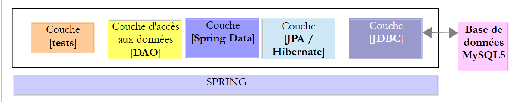
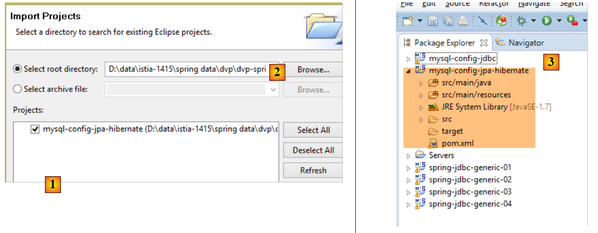
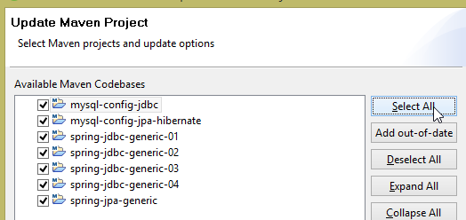
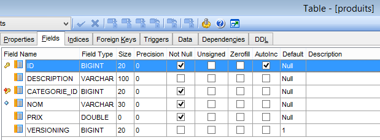
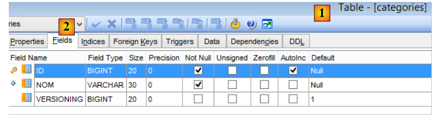
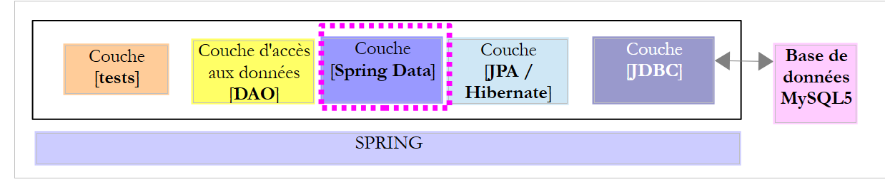
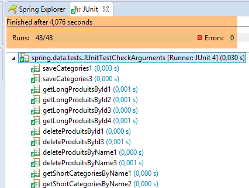
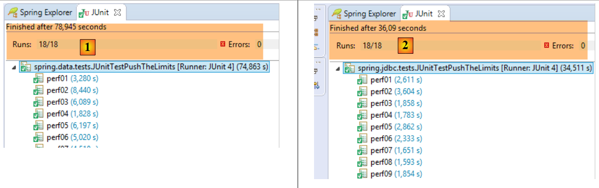

6. Spring Data JPA Hibernate
6.1. Introducción
Utilizaremos la base de datos [dbproduitscategories] gestionada por el proyecto [spring-jdbc-04] e implementaremos las dos interfaces [IDao<Category>, IDao<Product>] definidas en dicho proyecto. Esto nos permitirá hacer varias cosas:
- comparar el código de implementación;
- utilizar la misma capa de pruebas;
- comparar el rendimiento de las dos implementaciones;
 |
- la capa [JDBC] está implementada por el proyecto [mysql-config-jdbc] descrito en la sección 3.3;
Ahora pasaremos a las demás capas.
6.2. Configuración del entorno de trabajo
Utilizando STS, importe el proyecto [mysql-config-jpa-hibernate] [1] ubicado en la carpeta [<examples>/spring-database-config/mysql/eclipse] [2]:
 |
Este proyecto configura la capa [Spring JPA Hibernate] del proyecto. Cada implementación de JPA tiene su propio proyecto de configuración.
A continuación, importa el proyecto [spring-jpa-generic] [1] ubicado en la carpeta [<examples>/spring-database-generic/spring-jpa] [2]:
 |
Una vez hecho esto, actualice el entorno de Maven (Alt-F5) para todos los proyectos en [Package Explorer]:
 |
A continuación, para verificar el entorno de trabajo, ejecute la configuración de compilación denominada [spring-jpa-generic-JUnitTestDao-hibernate]:
 |
Esta configuración ejecuta la prueba [JUnitTestDao]. Esta prueba debería pasar:
 |
6.3. El proyecto de configuración de la capa JPA
 |
El objetivo de este proyecto es configurar la capa JPA de la arquitectura que se muestra a continuación:
 |
6.3.1. Configuración de Maven
El proyecto es un proyecto Maven configurado mediante el siguiente archivo [pom.xml]:
<project xsi:schemaLocation="http://maven.apache.org/POM/4.0.0 http://maven.apache.org/xsd/maven-4.0.0.xsd"
xmlns="http://maven.apache.org/POM/4.0.0" xmlns:xsi="http://www.w3.org/2001/XMLSchema-instance">
<modelVersion>4.0.0</modelVersion>
<groupId>dvp.spring.database</groupId>
<artifactId>generic-config-jpa</artifactId>
<version>0.0.1-SNAPSHOT</version>
<name>configuration mysql openjpa</name>
<parent>
<groupId>org.springframework.boot</groupId>
<artifactId>spring-boot-starter-parent</artifactId>
<version>1.2.3.RELEASE</version>
</parent>
<dependencies>
<!-- dépendances variables ********************************************** -->
<!-- JPA provider -->
<dependency>
<groupId>org.hibernate</groupId>
<artifactId>hibernate-entitymanager</artifactId>
</dependency>
<!-- dépendances constantes ********************************************** -->
<!-- Spring Data -->
<dependency>
<groupId>org.springframework.data</groupId>
<artifactId>spring-data-jpa</artifactId>
</dependency>
<!-- Spring Context -->
<!-- configuration JDBC inherited -->
<dependency>
<groupId>dvp.spring.database</groupId>
<artifactId>generic-config-jdbc</artifactId>
<version>0.0.1-SNAPSHOT</version>
<exclusions>
<exclusion>
<groupId>org.springframework.boot</groupId>
<artifactId>spring-boot-starter-jdbc</artifactId>
</exclusion>
</exclusions>
</dependency>
</dependencies>
<properties>
<project.build.sourceEncoding>UTF-8</project.build.sourceEncoding>
<java.version>1.7</java.version>
</properties>
<build>
<plugins>
<plugin>
<groupId>org.apache.maven.plugins</groupId>
<artifactId>maven-surefire-plugin</artifactId>
<version>2.18.1</version>
</plugin>
</plugins>
</build>
</project>
- líneas 5-7: el artefacto Maven generado por este proyecto. Los proyectos de configuración para las otras implementaciones de JPA (Eclipselink y OpenJpa) utilizarán este mismo artefacto. Esto significa que solo uno de estos proyectos puede estar activo en un momento dado. Por lo tanto, debes evitar que todos estén presentes en [Package Explorer]. Solo se necesita uno;
- líneas 10-14: el proyecto Maven principal que especifica las versiones de la mayoría de las dependencias requeridas por el proyecto;
- líneas 19-22: la biblioteca Hibernate;
- líneas 25-28: la biblioteca Spring Data;
- líneas 32-34: el proyecto de configuración de la capa JPA depende del proyecto de configuración de la capa JDBC, que define, entre otras cosas, el controlador JDBC para el SGBD que se está utilizando y los detalles de conexión a la base de datos;
- líneas 35–39: el proyecto de configuración de la capa JDBC incluye la biblioteca [Spring JDBC], que aquí se sustituye por la biblioteca [Spring Data JPA]. Por lo tanto, especificamos que no se incluya en las dependencias del proyecto. Sin embargo, si se mantiene, esto no provoca ningún error;
Al final, las dependencias del proyecto son las siguientes:
 |
6.3.2. Configuración de Spring
 |
La clase [ConfigJpa] configura el proyecto Spring:
package generic.jpa.config;
import javax.persistence.EntityManagerFactory;
import generic.jdbc.config.ConfigJdbc;
import org.apache.tomcat.jdbc.pool.DataSource;
import org.springframework.context.annotation.Bean;
import org.springframework.context.annotation.Configuration;
import org.springframework.context.annotation.Import;
import org.springframework.orm.jpa.JpaTransactionManager;
import org.springframework.orm.jpa.JpaVendorAdapter;
import org.springframework.orm.jpa.LocalContainerEntityManagerFactoryBean;
import org.springframework.orm.jpa.vendor.Database;
import org.springframework.orm.jpa.vendor.HibernateJpaVendorAdapter;
import org.springframework.transaction.PlatformTransactionManager;
@Configuration
@Import({ ConfigJdbc.class })
public class ConfigJpa {
// the provider JPA
@Bean
public JpaVendorAdapter jpaVendorAdapter() {
HibernateJpaVendorAdapter hibernateJpaVendorAdapter = new HibernateJpaVendorAdapter();
hibernateJpaVendorAdapter.setShowSql(false);
hibernateJpaVendorAdapter.setDatabase(Database.MYSQL);
hibernateJpaVendorAdapter.setGenerateDdl(true);
return hibernateJpaVendorAdapter;
}
// JPA entity packages
public final static String[] ENTITIES_PACKAGES = { "generic.jpa.entities.dbproduitscategories" };
// data source
@Bean
public DataSource dataSource() {
// data source TomcatJdbc
DataSource dataSource = new DataSource();
// configuration access JDBC
dataSource.setDriverClassName(ConfigJdbc.DRIVER_CLASSNAME);
dataSource.setUsername(ConfigJdbc.USER_DBPRODUITSCATEGORIES);
dataSource.setPassword(ConfigJdbc.PASSWD_DBPRODUITSCATEGORIES);
dataSource.setUrl(ConfigJdbc.URL_DBPRODUITSCATEGORIES);
// initially open connections
dataSource.setInitialSize(5);
// result
return dataSource;
}
// EntityManagerFactory
@Bean
public EntityManagerFactory entityManagerFactory(JpaVendorAdapter jpaVendorAdapter, DataSource dataSource) {
LocalContainerEntityManagerFactoryBean factory = new LocalContainerEntityManagerFactoryBean();
factory.setJpaVendorAdapter(jpaVendorAdapter);
factory.setPackagesToScan(ENTITIES_PACKAGES);
factory.setDataSource(dataSource);
factory.afterPropertiesSet();
return factory.getObject();
}
// Transaction manager
@Bean
public PlatformTransactionManager transactionManager(EntityManagerFactory entityManagerFactory) {
JpaTransactionManager txManager = new JpaTransactionManager();
txManager.setEntityManagerFactory(entityManagerFactory);
return txManager;
}
}
- línea 18: la clase es una clase de configuración de Spring;
- línea 19: importa los beans definidos por la clase de configuración [ConfigJdbc] utilizada para configurar el proyecto Spring [mysql-config-jdbc]. Estos son los filtros JSON;
- líneas 23–30: definen la implementación de JPA utilizada, en este caso la implementación de Hibernate (línea 25);
- línea 26: puedes elegir si mostrar o no las operaciones SQL ejecutadas por la implementación de Hibernate;
- línea 27: especifica el SGBD conectado a Hibernate. Esta configuración es importante. Permite a Hibernate utilizar el dialecto SQL del SGBD MySQL, incluidas sus características propias. Además, le informa sobre los tipos SQL y los objetos del SGBD que podrá utilizar. Es esta capacidad de la implementación de JPA para adaptarse a un SGBD específico lo que le confiere una alta portabilidad entre SGBD;
- línea 28: Hibernate puede generar o no las tablas para la base de datos de destino a partir de las entidades JPA que encuentre. Esta generación solo se produce si las tablas están ausentes. Si ya existen, no se hace nada. Utilizaremos esta capacidad de generar tablas cuando mostremos cómo se crearon los scripts de generación de SQL para las diversas bases de datos utilizadas en este documento;
- línea 33: el paquete que contiene las entidades JPA para la base de datos [dbproduitscategories];
- Líneas 36–49: La fuente de datos [tomcat-jdbc] vinculada a la base de datos [dbproduitscategories];
- líneas 52-60: el bean denominado [entityManagerFactory] (debe llamarse así) es el bean que creará el objeto [EntityManager], que gestiona el contexto de persistencia JPA. Todas las operaciones JPA pasan por él. Como estamos utilizando [Spring Data JPA], nunca utilizaremos este objeto nosotros mismos. Sin embargo, sí que necesitamos configurarlo. Necesita saber lo siguiente:
- la implementación de JPA utilizada (línea 55);
- la fuente de datos utilizada (línea 57);
- las entidades JPA para esta fuente (línea 56);
- línea 58: inicializa el EntityManager con esta información;
- línea 59: devuelve el singleton [entityManagerFactory];
- líneas 63-68: definen el gestor de transacciones. Debe llamarse [transactionManager];
- línea 65: se crea un gestor de transacciones JPA;
- línea 66: se conecta a la fuente de datos de la línea 37 a través del bean [entityManagerFactory] (líneas 53 y 57);
Solo el bean de las líneas 23–30 depende de la implementación de JPA utilizada. Los demás beans dependen de él.
6.3.3. Entidades en la capa [JPA]
 |
 |
La base de datos de destino es la base de datos [dbproduitscategories], con sus dos tablas [CATEGORIES] y [PRODUITS]. Hemos visto que también tiene otras tres tablas [USERS, ROLES, USERS_ROLES] que se utilizarán para proteger el servicio web que se va a implementar en la web. Por ahora, ignoraremos estas tablas. A modo de recordatorio, aquí está la estructura de las tablas [CATEGORIES] y [PRODUCTS]:
La tabla [PRODUCTS] es la siguiente:
 |
- [ID]: la clave primaria autoincremental de la tabla [2];
- [NAME]: el nombre único del producto [4];
- [PRECIO]: el precio del producto;
- [DESCRIPTION]: la descripción del producto;
- [VERSIONING] es el número de versión del producto. Su versión inicial es 1 [3]. Cada vez que se modifica el producto, el código que gestiona la tabla incrementa su número de versión;
- [CATEGORY_ID]: la clave externa de la tabla [CATEGORIES] para identificar la categoría a la que pertenece el producto;
 |
- en [1-3], la clave externa [CATEGORIE_ID] de la tabla [PRODUITS]. Hace referencia a la columna [ID] de la tabla [CATEGORIES] [4-5];
- cuando se elimina una categoría, también se eliminan todos los productos vinculados a ella [6]. Es importante tener en cuenta este punto, ya que se utiliza en la construcción de la capa [DAO] que utiliza la base de datos [dbproduitscategories];
La tabla [CATEGORIES] es la siguiente:
 |
- [ID]: clave primaria autoincremental;
- [VERSIONING]: número de versión de la categoría;
- [NAME]: nombre único de la categoría;
A continuación describiremos las entidades JPA [Product] y [Category], que se corresponden con las tablas [PRODUCTS] y [CATEGORIES].
|
6.3.3.1. La interfaz [AbstractCoreEntity]
La interfaz [AbstractCoreEntity] está implementada por las entidades JPA [Category] y [Product]:
package generic.jpa.entities.dbproduitscategories;
public interface AbstractCoreEntity {
// getters and setters for [id], [version], [entityType] fields
public Long getId();
public void setId(Long id);
public Long getVersion();
public void setVersion(Long version);
public enum EntityType {
PROXY, POJO
}
public EntityType getEntityType();
public void setEntityType(EntityType entityType);
}
Esta interfaz, implementada por las dos entidades JPA, simplemente enumera los métodos para leer y escribir los campos [id], [version] y [entityType] de estas entidades. La función del campo [entityType] se explicará más adelante;
6.3.3.2. La entidad JPA [Product]
La clase [Product] es la entidad JPA asociada a una fila de la tabla [PRODUCTS]:
 |
package generic.jpa.entities.dbproduitscategories;
import generic.jdbc.config.ConfigJdbc;
import generic.jpa.infrastructure.ProxyException;
import javax.persistence.Column;
import javax.persistence.Entity;
import javax.persistence.FetchType;
import javax.persistence.GeneratedValue;
import javax.persistence.GenerationType;
import javax.persistence.Id;
import javax.persistence.JoinColumn;
import javax.persistence.ManyToOne;
import javax.persistence.Table;
import javax.persistence.Transient;
import javax.persistence.Version;
import com.fasterxml.jackson.annotation.JsonFilter;
import com.fasterxml.jackson.annotation.JsonIgnore;
@Entity
@Table(name = ConfigJdbc.TAB_PRODUITS)
@JsonFilter("jsonFilterProduit")
public class Produit implements AbstractCoreEntity {
// properties
@Id
@GeneratedValue(strategy = GenerationType.IDENTITY)
@Column(name = ConfigJdbc.TAB_JPA_ID)
protected Long id;
@Version
@Column(name = ConfigJdbc.TAB_JPA_VERSIONING)
protected Long version;
@Transient
protected EntityType entityType = EntityType.POJO;
@Transient
@JsonIgnore
protected String simpleClassName = getClass().getSimpleName();
// properties
@Column(name = ConfigJdbc.TAB_PRODUITS_NOM, unique = true, length = 30, nullable = false)
private String nom;
@Column(name = ConfigJdbc.TAB_PRODUITS_CATEGORIE_ID, insertable = false, updatable = false, nullable = false)
private Long idCategorie;
@Column(name = ConfigJdbc.TAB_PRODUITS_PRIX, nullable = false)
private double prix;
@Column(name = ConfigJdbc.TAB_PRODUITS_DESCRIPTION, length = 100)
private String description;
// the category
@ManyToOne(fetch = FetchType.LAZY)
@JoinColumn(name = ConfigJdbc.TAB_PRODUITS_CATEGORIE_ID)
private Categorie categorie;
// manufacturers
public Produit() {
}
public Produit(Long id, Long version, String nom, Long idCategorie, double prix, String description,
Categorie categorie) {
this.id = id;
this.version = version;
this.nom = nom;
this.idCategorie = idCategorie;
this.prix = prix;
this.description = description;
this.categorie = categorie;
}
// signature
public String toString() {
return String.format("[id=%s, version=%s, nom=%s, prix=10.2f, desc=%s, idCategorie=%s]", id, version, nom, prix,
description, idCategorie);
}
// ------------------------------------------------------------
// redefine [equals] and [hashcode]
@Override
public int hashCode() {
Long id = getId();
return (id != null ? id.hashCode() : 0);
}
@Override
public boolean equals(Object entity) {
if (!(entity instanceof AbstractCoreEntity)) {
return false;
}
String class1 = this.getClass().getName();
String class2 = entity.getClass().getName();
if (!class2.equals(class1)) {
return false;
}
AbstractCoreEntity other = (AbstractCoreEntity) entity;
Long id = getId();
Long otherId = other.getId();
return id != null && otherId != null && id.equals(otherId);
}
// getters and setters
...
public void setCategorie(Categorie categorie) {
// entity type
if (entityType == EntityType.PROXY) {
throw new ProxyException(1005, new RuntimeException(
"On ne peut changer la catégorie d'un produit de type [PROXY]"), simpleClassName);
}
this.categorie = categorie;
}
}
- línea 21: la anotación [@Entity] convierte a la clase [Product] en una entidad gestionada por la capa [JPA]. También se puede escribir [@Entity(name="MyProduct")], lo que da a la entidad el nombre [MyProduct]. A falta de esta información, el nombre de la entidad es el nombre de la clase, en este caso [Product]. Esta convención de nomenclatura resulta necesaria cuando hay dos clases de paquetes diferentes entre las entidades que comparten el mismo nombre;
- línea 22: la anotación [@Table(name = "PRODUCTS")] indica que la clase [Product] es la representación en objetos de una fila de la tabla [PRODUCTS] de la base de datos;
- línea 23: el nombre del filtro JSON que se aplicará a la entidad. Veremos que la propiedad [categorie] de la línea 58 no siempre está disponible. Por lo tanto, debe excluirse de la representación JSON del objeto. Para ello, necesitamos un filtro. Por lo tanto, utilizaremos un filtro denominado [jsonFilterCategorie] para especificar si queremos o no la propiedad [categorie];
- línea 26: la anotación [@Id] hace que el campo anotado sea el campo asociado a la clave principal de la tabla de la línea 19;
- línea 27: la anotación [@GeneratedValue(strategy = GenerationType.IDENTITY)] establece el modo de generación automática de la clave primaria en la tabla [PRODUITS]. El atributo [strategy] determina esto. Existen diferentes modos:

La estrategia [IDENTITY] no está disponible para todos los SGBD. De los seis SGBD probados, estaba disponible para [MySQL 5, PostgreSQL 9.4, SQL Server 2014, DB2 Express-C10.5]. Para los otros dos [Oracle Express 11g Release 2, Firebird 2.5.4], hubo que utilizar la estrategia [SEQUENCE]. Para garantizar la portabilidad entre implementaciones de JPA, no se debe utilizar la estrategia [AUTO], ya que deja la elección de la estrategia de generación de la clave primaria en manos de la implementación de JPA. Así, con MySQL 5 y la estrategia [AUTO]:
- Hibernate elige la estrategia [IDENTITY] con el modo [AUTO_INCREMENT] para la clave primaria;
- EclipseLink elige la estrategia [TABLE], que crea por defecto una tabla llamada [SEQUENCE] a la que hay que consultar para recuperar las claves primarias.
En definitiva, la estructura de la base de datos gestionada por estas dos implementaciones de JPA no es la misma. Si fue generada por Hibernate, no será utilizable por EclipseLink, y viceversa.
- Línea 28: La anotación [@Column(name="ID"] establece el nombre de la columna de la tabla [PRODUCTS] que se asociará al campo [id];
- línea 29: se utiliza el tipo [Long] en lugar de [long] para la clave primaria. Esto se debe a que las claves primarias [null] tienen un significado específico para JPA. Por lo tanto, es preferible utilizar aquí un tipo de objeto en lugar de un tipo simple;
- línea 31: la anotación [@Version] indica que el campo [version] está asociado a una columna de versionado. La implementación de JPA incrementará este número de versión cada vez que se modifique la entidad. Este número se utiliza para evitar actualizaciones simultáneas de la entidad por parte de dos usuarios diferentes: dos usuarios, U1 y U2, leen la entidad E con un número de versión igual a V1. U1 modifica E y persiste este cambio en la base de datos: el número de versión cambia entonces a V1+1. A su vez, U2 modifica E e intenta persistir este cambio en la base de datos: recibirá una excepción porque su versión (V1) difiere de la de la base de datos (V1+1);
- Línea 36: el tipo de entidad. Habrá dos: POJO y PROXY. Por defecto, la instancia de Product será un POJO (Plain Old Java Object). En algunos casos, las instancias [Product] recuperadas de la base de datos serán de tipo [PROXY]. Esto ocurrirá cuando la propiedad [Category] de la línea 58 no se haya inicializado con una categoría debido al atributo [fetch = FetchType.LAZY] de la línea 56. En este caso, las implementaciones de JPA que se van a probar difieren:
- [Hibernate, OpenJPA]: al acceder a la categoría de un producto de tipo [PROXY] se lanza una excepción. Hibernate utiliza el término «proxy» para referirse a una instancia JPA obtenida en modo [LAZY]. Por eso he utilizado este término para referirme a este tipo de entidad;
- [EclipseLink]: acceder a la categoría de un producto de tipo [PROXY] desencadena una búsqueda de esa categoría en la base de datos, y no se lanza ninguna excepción;
Como quería una capa de pruebas independiente de la implementación de JPA utilizada, necesitaba conocer el tipo de cada entidad: POJO o PROXY. Por eso añadí el campo [entityType] a las entidades JPA;
- Línea 35: La anotación [@Transient] indica que la implementación de JPA debe ignorar este campo. De hecho, no existe en las tablas del SGBD;
- Línea 40: la clase [Product] lanza una [ProxyException] que requiere el nombre de la clase;
- línea 38: al igual que antes, indicamos que la implementación de JPA debe ignorar este campo;
- línea 39: la anotación [@JsonIgnore] indica que el serializador/deserializador JSON para una instancia de [Product] debe ignorar este campo;
- línea 43: la anotación [@Column] asocia el campo [name] con la columna [NAME] de la tabla [PRODUCTS]. Cuando el campo tiene el mismo nombre que la columna asociada (sin distinción entre mayúsculas y minúsculas), se puede omitir la anotación [@Column]. Este sería el caso aquí. Los atributos [unique = true, length = 30, nullable = false] solo se utilizan cuando la implementación de JPA genera la tabla [CATEGORIES] a partir de la entidad [Product]. Se traducirán a los atributos SQL [UNIQUE, VARCHAR(30), NOT NULL], que garantizan que la columna [NAME] tendrá como máximo 30 caracteres, será única en la tabla y no podrá tener el valor NULL;
- líneas 46–47: el campo [idCategorie] está vinculado a la columna [CATEGORIE_ID]. Volveremos a estos atributos un poco más adelante;
- líneas 49-50: el campo [price] se asocia a la columna [PRICE];
- líneas 52-53: el campo [description] está asociado a la columna [DESCRIPTION];
- líneas 56–58: la categoría del producto;
- línea 56: la anotación [@ManyToOne] indica que la columna a la que hace referencia la anotación de la línea 57 [@JoinColumn(name = "CATEGORIE_ID")] es una clave externa de la tabla [PRODUITS] de la entidad [Product] a la tabla [CATEGORIES] asociada a la entidad de la línea 58. Esta anotación debe aplicarse a una entidad JPA. Por lo tanto, la clase de la línea 58 debe ser una entidad JPA;
- Línea 56: La anotación [fetch = FetchType.LAZY] especifica que, cuando se recupera un producto de la tabla [PRODUCTS], su categoría (línea 58) no se recupera inmediatamente (carga diferida). Se recupera entonces durante la primera llamada al método [getCategory]. Para lograrlo, en tiempo de ejecución, la capa JPA mejora el método inicial [getCategorie] (que simplemente devuelve el campo de categoría) realizando una llamada al SGBD para recuperar la categoría, una técnica conocida como «proxying». Las implementaciones de JPA difieren en cómo gestionan esta característica, como se ha mencionado anteriormente. Este atributo no es obligatorio. La implementación de JPA utilizada puede ignorarlo. Es precisamente porque la propiedad [categorie] puede estar presente o no por lo que hemos introducido el filtro JSON en la línea 23. La columna de unión [CATEGORIE_ID] de la tabla [PRODUITS] se actualiza automáticamente cuando se inserta o actualiza un producto. Recibe el valor de [categorie.getId()], donde [categorie] es el campo de la línea 58. La especificación JPA exige que esta columna de unión no pueda actualizarse por ningún otro medio. Por lo tanto, impone los atributos [insertable = false, updatable = false] en la línea 46, lo que garantiza que la columna [CATEGORIE_ID] (la columna de unión) asociada al campo [idCategorie] no pueda modificarse mediante el campo [idCategorie]. Solo será posible la transferencia de la columna [CATEGORIE_ID] al campo [idCategorie];
- líneas 91-104: la igualdad entre entidades [Product] se define como la igualdad entre sus claves primarias [id];
- líneas 108-115: para que nuestra capa de prueba sea portátil, gestionaremos de forma uniforme las entidades [PROXY] en las tres implementaciones de JPA [Hibernate, EclipseLink, OpenJpa]. Para una entidad [Product] de tipo [PROXY], impediremos que se modifique el valor del campo [category]. La clase [ProxyException] es la siguiente:
 |
package generic.jpa.infrastructure;
import generic.jdbc.infrastructure.UncheckedException;
public class ProxyException extends UncheckedException {
private static final long serialVersionUID = 7278276670314994574L;
public ProxyException() {
}
public ProxyException(int code, Throwable e, String simpleClassName) {
super(code, e, simpleClassName);
}
}
Para concluir el análisis de esta entidad, cabe señalar que las anotaciones y sus atributos se utilizan en dos casos distintos:
- para crear tablas de base de datos;
- para consultarlas. En este caso, la implementación de JPA espera encontrar las tablas exactamente tal y como las habría generado ella misma. Por lo tanto, no podemos asociar cualquier tabla [PRODUCTS] con la entidad [Product] anterior. Debe tener al menos (puede tener otras) las características de la tabla [PRODUCTS] que JPA habría generado. Al trabajar con JPA, el enfoque ideal es comenzar con una base de datos vacía en la que JPA genere las tablas. Hablaremos de esta generación un poco más adelante. El script SQL proporcionado para el SGBD MySQL se generó a partir de las tablas generadas por JPA.
Todos los atributos de la entidad [Product] se utilizan para generar la tabla [PRODUCTS]. Una vez hecho esto, los atributos de generación como [unique = true, length = 30, nullable = false] ya no se utilizan al consultar las tablas.
6.3.3.3. La entidad [Category] de JPA
La clase [Category] es una entidad JPA asociada a una fila de la tabla [CATEGORIES]:
 |
Su código es el siguiente:
package generic.jpa.entities.dbproduitscategories;
import generic.jdbc.config.ConfigJdbc;
import generic.jpa.infrastructure.ProxyException;
import java.util.ArrayList;
import java.util.List;
import javax.persistence.CascadeType;
import javax.persistence.Column;
import javax.persistence.Entity;
import javax.persistence.FetchType;
import javax.persistence.GeneratedValue;
import javax.persistence.GenerationType;
import javax.persistence.Id;
import javax.persistence.OneToMany;
import javax.persistence.Table;
import javax.persistence.Transient;
import javax.persistence.Version;
import com.fasterxml.jackson.annotation.JsonFilter;
import com.fasterxml.jackson.annotation.JsonIgnore;
@Entity
@Table(name = ConfigJdbc.TAB_CATEGORIES)
@JsonFilter("jsonFilterCategorie")
public class Categorie implements AbstractCoreEntity {
@Id
@GeneratedValue(strategy = GenerationType.IDENTITY)
@Column(name = ConfigJdbc.TAB_JPA_ID)
protected Long id;
@Version
@Column(name = ConfigJdbc.TAB_JPA_VERSIONING)
protected Long version;
@Transient
protected EntityType entityType = EntityType.POJO;
@Transient
@JsonIgnore
protected String simpleClassName = getClass().getSimpleName();
// properties
@Column(name = ConfigJdbc.TAB_CATEGORIES_NOM, unique = true, length = 30, nullable = false)
private String nom;
// related products
@OneToMany(fetch = FetchType.LAZY, mappedBy = "categorie", cascade = { CascadeType.ALL })
private List<Produit> produits;
// manufacturers
public Categorie() {
}
public Categorie(Long id, Long version, String nom, List<Produit> produits) {
this.id = id;
this.version = version;
this.nom = nom;
this.produits = produits;
}
// signature
public String toString() {
return String.format("[id=%s, version=%s, nom=%s]", id, version, nom);
}
// methods
public void addProduit(Produit produit) {
// entity type
if (entityType == EntityType.PROXY) {
throw new ProxyException(1004, new RuntimeException(
"On ne peut ajouter de produits à une catégorie de type [PROXY]"), simpleClassName);
}
// add a product
if (produits == null) {
produits = new ArrayList<Produit>();
}
if (produit != null) {
// we add the product
produits.add(produit);
// set your category
produit.setCategorie(this);
produit.setIdCategorie(this.id);
}
}
// ------------------------------------------------------------
// redefine [equals] and [hashcode]
@Override
public int hashCode() {
Long id = getId();
return (id != null ? id.hashCode() : 0);
}
@Override
public boolean equals(Object entity) {
if (!(entity instanceof AbstractCoreEntity)) {
return false;
}
String class1 = this.getClass().getName();
String class2 = entity.getClass().getName();
if (!class2.equals(class1)) {
return false;
}
AbstractCoreEntity other = (AbstractCoreEntity) entity;
Long id = getId();
Long otherId = other.getId();
return id != null && otherId != null && id.equals(otherId);
}
// getters and setters
...
}
- línea 24: la clase es una entidad JPA;
- línea 25: asociada a la tabla [CATEGORIES];
- línea 26: la representación JSON de la entidad [Category] está controlada por el filtro denominado [jsonFilterCategory]. Este debe configurarse antes de cualquier solicitud de una representación JSON de la entidad. El filtro [jsonFilterCategory] se utilizará para determinar si se incluye o no el campo [products] de la línea 40 en la representación JSON de la entidad [Category];
- líneas 29–32: el campo [id] está asociado a la clave primaria [ID] de la tabla [CATEGORIES]. El modo de generación seleccionado es [IDENTITY], que corresponde a [AUTO_INCREMENT] para MySQL;
- líneas 34-36: el campo [version] está vinculado a la columna [VERSIONING] de la tabla [CATEGORIES];
- líneas 38-39: el tipo de la entidad [Categorie];
- líneas 41–43: el nombre corto de la clase [Categorie];
- Líneas 46-47: El campo [name] está vinculado a la columna [NAME] de la tabla [CATEGORIES]. Le asignamos los atributos JPA [unique = true, length = 30, nullable = false] para que, cuando se genere la tabla [CATEGORIES], la columna [NAME] tenga los atributos SQL [UNIQUE, VARCHAR(30), NOT NULL];
- líneas 50-51: los productos que pertenecen a la categoría;
- línea 50: la anotación [@OneToMany] es la relación inversa de la relación [@ManyToOne] que encontramos en la entidad [Product]. El atributo [mappedBy = "category"] especifica el campo de la entidad [Product] anotado por la relación inversa [@ManyToOne]. El atributo [cascade = { CascadeType.ALL }] especifica que las operaciones (persist, merge, remove) realizadas en una @Entity [Category] deben propagarse a los [products] de la línea 51. Se pueden especificar propagaciones parciales utilizando las constantes [CascadeType.PERSIST, CascadeType.MERGE, CascadeType.REMOVE];
- línea 50: el atributo [fetch = FetchType.LAZY] especifica que, cuando se recupera una categoría de la tabla [CATEGORIES], sus productos no se recuperan inmediatamente. Se recuperan durante la primera llamada al método [getProduits]. Para lograrlo, en tiempo de ejecución, la capa JPA mejora el método inicial [getProduits] (que simplemente devuelve el campo products) realizando una llamada al SGBD para recuperar los productos de la categoría. Este atributo es obligatorio. La implementación de JPA no puede ignorarlo. Dado que la propiedad [products] puede estar inicializada o no, hemos introducido el filtro JSON en la línea 26, lo que nos permite especificar si queremos o no esta propiedad y el tipo de entidad en la línea 39;
- líneas 71–88: el método [addProduct] permite añadir un producto a la categoría;
- líneas 73-76: Para estandarizar el manejo de proxies en diferentes implementaciones de JPA, decidimos que no se pueden añadir productos a una entidad [Category] de tipo PROXY;
- líneas 92-112: dos entidades [Category] se consideran iguales si tienen la misma clave primaria [id];
6.3.4. El archivo [persistence.xml]
 |
Las aplicaciones JPA deben definir ciertas propiedades del proveedor JPA que se está utilizando, así como las entidades JPA que se van a utilizar, en un archivo [META-INF/persistence.xml] ubicado en la ruta de clases de la aplicación. Arriba, se ha colocado en la carpeta [src/main/resources], que forma parte efectiva de la ruta de clases de un proyecto de Eclipse. Cuando se utiliza JPA junto con Spring, cierta información que debería estar en el archivo [persistence.xml] se coloca en otras partes de las clases de configuración de Spring. En una aplicación Spring JPA, Spring controla JPA. Con Spring JPA Hibernate, el archivo [persistence.xml] puede reducirse a su forma más simple:
<?xml version="1.0" encoding="UTF-8"?>
<persistence version="1.0" xmlns="http://java.sun.com/xml/ns/persistence" xmlns:xsi="http://www.w3.org/2001/XMLSchema-instance"
xsi:schemaLocation="http://java.sun.com/xml/ns/persistence http://java.sun.com/xml/ns/persistence/persistence_1_0.xsd">
<persistence-unit name="dummy-persistence-unit" transaction-type="RESOURCE_LOCAL" />
</persistence>
- líneas 1-5: un archivo [persistence.xml] debe tener una etiqueta raíz <persistence>. Los atributos de la etiqueta de la línea 2 no se utilizarán en esta aplicación;
- un archivo de persistencia puede definir una o más unidades de persistencia utilizando la etiqueta <persistence-unit> (línea 4). Una unidad de persistencia gestiona el acceso a una base de datos específica. Si la aplicación gestiona dos bases de datos simultáneamente, tendrá dos unidades de persistencia;
- Línea 4: Una unidad de persistencia tiene un nombre [atributo name], admite un tipo de transacción [atributo transaction-type], tiene propiedades y define las entidades asociadas a las tablas de la base de datos gestionadas por la unidad de persistencia. Aquí, dado que el acceso a la base de datos será gestionado por [Spring JPA Hibernate], estos dos últimos datos pueden colocarse en otro lugar. Hay dos tipos de transacciones:
- [RESOURCE_LOCAL]: las transacciones son gestionadas por la propia aplicación. Este es el caso aquí, donde Spring gestionará las transacciones;
- [JTA] (Java Transaction API): el contenedor EJB (Enterprise Java Bean) que ejecuta la aplicación gestiona automáticamente las transacciones basándose en las anotaciones Java que se encuentran en el código. En este caso no estamos utilizando esta configuración;
Más adelante veremos que el contenido de este archivo [persistence.xml] depende de la implementación de JPA utilizada.
6.4. El proyecto [spring-jpa-generic]
Recapitulemos lo que queremos hacer. Queremos implementar la siguiente arquitectura:
 |
en la que la capa [DAO] implementaría la interfaz [IDao<Product>, IDao<Category>] estudiada en el capítulo 4. El objetivo es comparar dos implementaciones de esta interfaz:
- una creada con Spring JDBC;
- y otra creada con Spring JPA;
En la arquitectura anterior:
- la capa [JDBC] está implementada por el proyecto [mysql-config-jdbc] descrito en la sección 3.3;
- la capa [JPA] se implementa mediante el proyecto [mysql-config-jpa-hibernate] descrito en la sección 6.3;
El proyecto [spring-jpa-generic] se encarga de la implementación de las capas [DAO] y [Spring Data].
 |
6.4.1. Configuración de Maven
El proyecto [spring-jpa-generic] es un proyecto Maven configurado mediante el siguiente archivo [pom.xml]:
<?xml version="1.0" encoding="UTF-8"?>
<project xmlns="http://maven.apache.org/POM/4.0.0" xmlns:xsi="http://www.w3.org/2001/XMLSchema-instance"
xsi:schemaLocation="http://maven.apache.org/POM/4.0.0 http://maven.apache.org/xsd/maven-4.0.0.xsd">
<modelVersion>4.0.0</modelVersion>
<groupId>dvp.spring.database</groupId>
<artifactId>spring-jpa-generic</artifactId>
<version>0.0.1-SNAPSHOT</version>
<packaging>jar</packaging>
<name>spring-jpa-generic</name>
<description>démo spring data avec tables de catégories et de produits</description>
<parent>
<groupId>org.springframework.boot</groupId>
<artifactId>spring-boot-starter-parent</artifactId>
<version>1.2.3.RELEASE</version>
</parent>
<dependencies>
<!-- configuration JPA of SGBD -->
<dependency>
<groupId>dvp.spring.database</groupId>
<artifactId>generic-config-jpa</artifactId>
<version>0.0.1-SNAPSHOT</version>
</dependency>
</dependencies>
<properties>
<project.build.sourceEncoding>UTF-8</project.build.sourceEncoding>
<java.version>1.7</java.version>
</properties>
<build>
<plugins>
<plugin>
<groupId>org.apache.maven.plugins</groupId>
<artifactId>maven-surefire-plugin</artifactId>
<version>2.18.1</version>
</plugin>
</plugins>
</build>
</project>
- Líneas 22-26: El proyecto solo tiene una dependencia, que es el proyecto que configura la capa [JPA] de la aplicación, que acabamos de examinar. Se trata de una aplicación genérica:
- cambiamos el SGBD modificando el proyecto de configuración de la capa [JDBC];
- cambiamos la implementación de JPA modificando el proyecto de configuración de la capa [JPA];
Al final, las dependencias son las siguientes:
 |
6.4.2. Configuración de Spring
 |
La clase [AppConfig] configura el proyecto Spring:
package spring.data.config;
import generic.jpa.config.ConfigJpa;
import org.springframework.context.annotation.ComponentScan;
import org.springframework.context.annotation.Configuration;
import org.springframework.context.annotation.Import;
import org.springframework.data.jpa.repository.config.EnableJpaRepositories;
@EnableJpaRepositories(basePackages = { "spring.data.repositories" })
@Configuration
@ComponentScan(basePackages = { "spring.data.dao" })
@Import({ ConfigJpa.class })
public class AppConfig {
}
- Línea 11: La clase es una clase de configuración de Spring;
- línea 10: la anotación [@EnableJpaRepositories] se utiliza para designar los paquetes que contienen las interfaces [CrudRepository] de Spring Data. Esto los convierte en componentes de Spring que pueden inyectarse en otros componentes de Spring;
- línea 12: la anotación [@ComponentScan] indica que se debe escanear el paquete [spring.data.dao] en busca de componentes de Spring. Se encontrarán los componentes [DaoCategory] y [DaoProduct];
- línea 13: se importan los beans de la clase de configuración [ConfigJpa]. Estos incluyen el bean para la implementación de JPA que se está utilizando (Hibernate, Eclipselink, OpenJpa), la fuente de datos que se va a utilizar, el EntityManager que gestionará las operaciones de JPA y el gestor de transacciones;
6.4.3. La capa [Spring Data]
 |
 |
6.4.3.1. La interfaz [CategoriesRepository]
La interfaz [CategoriesRepository] gestiona el acceso a la tabla [CATEGORIES]:
package spring.data.repositories;
import generic.jpa.entities.dbproduitscategories.Categorie;
import java.util.List;
import org.springframework.data.jpa.repository.Query;
import org.springframework.data.repository.CrudRepository;
public interface CategoriesRepository extends CrudRepository<Categorie, Long> {
// categorie avec ses produits
@Query("select c from Categorie c left join fetch c.produits where c.id=?1")
public Categorie getLongCategorieById(Long id);
@Query("select c from Categorie c left join fetch c.produits where c.nom=?1")
public Categorie getLongCategorieByName(String nom);
@Query("select c from Categorie c where c.nom in ?1")
public List<Categorie> getShortCategoriesByName(Iterable<String> names);
@Query("select c from Categorie c where c.id in ?1")
public List<Categorie> getShortCategoriesById(Iterable<Long> ids);
@Query("select distinct c from Categorie c left join fetch c.produits where c.id in ?1")
public List<Categorie> getLongCategoriesById(List<Long> names);
@Query("select distinct c from Categorie c left join fetch c.produits where c.nom in ?1")
public List<Categorie> getLongCategoriesByName(List<String> names);
@Query("select c from Categorie c")
public List<Categorie> getAllShortCategories();
@Query("select distinct c from Categorie c left join fetch c.produits")
public List<Categorie> getAllLongCategories();
}
- Línea 10: La interfaz [CrudRepository] se utilizó y explicó en la sección 5.1.3. A modo de recordatorio:
- el primer tipo de parámetro de la interfaz es la entidad JPA gestionada para las operaciones CRUD (findOne, findAll, save, delete, deleteAll),
- el segundo tipo de parámetro de la interfaz es la clave principal de la entidad JPA, en este caso un entero [Long];
Los métodos de la interfaz se implementan mediante consultas JPQL (Java Persistence Query Language). Estas consultas se dirigen a entidades JPA. En una consulta de este tipo:
- las tablas se sustituyen por sus entidades JPA asociadas;
- las columnas se sustituyen por los campos de las entidades JPA utilizadas en la consulta;
Tomemos el ejemplo de las líneas 31-32: el método de la línea 32 recupera todas las categorías de la base de datos en su forma abreviada. Se implementa mediante la consulta JPQL (Java Persistence Query Language) de la línea 31, que se asemeja mucho a su equivalente en SQL. Para una comprensión más profunda de JPQL, véase [ref2] (véase la sección 1.2).
Los métodos de la interfaz [CategoriesRepository] son los siguientes:
- Líneas 13-14: El método [getLongCategoryById] devuelve la versión completa de una categoría a la que se hace referencia mediante su clave primaria [id], es decir, la categoría junto con sus productos. Recordemos que en la entidad [Category], el campo [products] tenía el atributo [fetch = FetchType.LAZY] (carga diferida). En la consulta JPQL, forzamos la carga de productos utilizando la palabra clave [fetch]. El parámetro ?1 de la consulta será sustituido en tiempo de ejecución por el valor del primer parámetro del método de la línea 12, es decir, el parámetro [Long id];
- líneas 16-17: el método [getLongCategoryByName] devuelve la versión larga de una categoría a la que se hace referencia por su nombre [name];
- líneas 19-20: el método [getShortCategoriesByName] devuelve las versiones cortas de las categorías a las que se hace referencia por sus nombres. El campo [products] de estas categorías no es nulo. Contiene una referencia a un proxy (una clase creada por la implementación de JPA) cuya función es recuperar los productos de la categoría cuando se le llama. Llamarlo fuera del contexto de persistencia de JPA lanza una excepción (Hibernate y OpenJPA, pero no EclipseLink). Por este motivo, no utilizaremos el campo [products] de la versión corta de una categoría;
- líneas 22-23: el método [getShortCategoriesById] devuelve las versiones cortas de las categorías a las que se hace referencia mediante sus claves primarias [id];
- líneas 25-26: el método [getLongCategoriesById] devuelve las versiones largas de las categorías a las que se hace referencia mediante sus claves primarias [id];
- líneas [28-29]: el método [getLongCategoriesByName] devuelve las versiones largas de las categorías a las que se hace referencia por sus nombres;
- líneas 31-32: el método [getAllShortCategories] devuelve las versiones cortas de todas las categorías;
- líneas 34-35: el método [getAllLongCategories] devuelve las versiones largas de todas las categorías;
Nota: No todas las implementaciones de JPA admiten la misma sintaxis JPQL. Por lo tanto, la siguiente sintaxis es aceptada por Hibernate y EclipseLink, pero no por OpenJpa:
@Query("select c from Categorie c left join fetch c.produits p where c.nom=?1")
OpenJpa no acepta el alias [p] anterior.
6.4.3.2. La interfaz [ProductsRepository]
La interfaz [ProductsRepository] gestiona el acceso a la tabla [PRODUCTS]:
package spring.data.repositories;
import generic.jpa.entities.dbproduitscategories.Produit;
import java.util.List;
import org.springframework.data.jpa.repository.Query;
import org.springframework.data.repository.CrudRepository;
import org.springframework.transaction.annotation.Transactional;
@Transactional()
public interface ProduitsRepository extends CrudRepository<Produit, Long> {
// un produit avec sa catégorie
@Query("select p from Produit p left join fetch p.categorie where p.id=?1")
public Produit getLongProduitById(Long id);
@Query("select p from Produit p left join fetch p.categorie where p.nom=?1")
public Produit getLongProduitByName(String nom);
@Query("select p from Produit p where p.id in ?1")
public List<Produit> getShortProduitsById(List<Long> ids);
@Query("select p from Produit p where p.nom in ?1")
public List<Produit> getShortProduitsByName(List<String> names);
@Query("select distinct p from Produit p left join fetch p.categorie where p.id in ?1")
public List<Produit> getLongProduitsById(List<Long> ids);
@Query("select distinct p from Produit p left join fetch p.categorie where p.nom in ?1")
public List<Produit> getLongProduitsByName(List<String> names);
@Query("select distinct p from Produit p left join fetch p.categorie")
public List<Produit> getAllLongProduits();
@Query("select p from Produit p")
public List<Produit> getAllShortProduits();
}
- líneas [15-16]: el método [getLongProductById] devuelve la versión completa de un producto identificado por su clave primaria [id], incluida su categoría. Recordemos que en la entidad [Product], el campo [category] tenía el atributo [fetch = FetchType.LAZY] (carga diferida). En la consulta JPQL, forzamos la carga de la categoría utilizando la palabra clave [fetch];
- líneas 18-19: el método [getLongProductByName] devuelve la versión larga de un producto identificado por su nombre;
- líneas 21-22: el método [getShortProduitsById] devuelve la versión corta de los productos identificados por su clave primaria [id]. En esta versión corta, el campo [category] no es nulo. Contiene una referencia a un proxy generado por la implementación de JPA, que, si se invoca, recuperará la categoría del producto. Esta llamada solo se puede realizar dentro del contexto de persistencia de JPA. Realizarla en otro lugar provoca una excepción (Hibernate y OpenJPA, pero no EclipseLink). Por lo tanto, en la capa [DAO] o en cualquier otro lugar, no utilizaremos el campo [category] de un producto en su versión corta. En la versión corta del producto, se inicializa el campo [idCategorie]. Su valor es la clave primaria de la categoría a la que pertenece el producto. Esto nos permite recuperar posteriormente esta categoría desde la capa [DAO] mediante el método [DaoCategorie.getShortCategoriesById(idCategorie)];
- líneas 24-25: el método [getShortProduitsByName] devuelve la versión corta de los productos identificados por sus nombres;
- líneas 27-28: el método [getLongProduitsById] devuelve la versión larga de los productos identificados por sus claves primarias;
- líneas 30-31: el método [getLongProductsByName] devuelve la versión larga de los productos identificados por sus nombres;
- líneas 33-34: el método [getAllLongProducts] devuelve la versión larga de todos los productos;
- líneas 36-37: el método [getAllShortProducts] devuelve la versión corta de todos los productos;
Estas interfaces serán implementadas por clases generadas por la implementación de JPA en tiempo de ejecución. Dichas clases se denominan clases [proxy]. Por defecto, los métodos de la interfaz [CrudRepository] se ejecutan dentro de una transacción. El hecho de que las interfaces [ProductsRepository] y [CategoriesRepository] extiendan la clase [CrudRepository] las convierte en componentes de Spring. Como tales, pueden inyectarse en otros componentes de Spring.
6.4.4. La capa [DAO]
 |
 |
6.4.4.1. La interfaz [IDao<T>]
La interfaz [IDao<T>] es la que ya se ha comentado en la implementación de la capa [DAO] utilizando Spring JDBC (véase la sección 4.7);
package spring.data.dao;
import generic.jpa.entities.dbproduitscategories.AbstractCoreEntity;
import java.util.List;
public interface IDao<T extends AbstractCoreEntity> {
// list of all T entities
public List<T> getAllShortEntities();
public List<T> getAllLongEntities();
// special entities - short version
public List<T> getShortEntitiesById(Iterable<Long> ids);
public List<T> getShortEntitiesById(Long... ids);
public List<T> getShortEntitiesByName(Iterable<String> names);
public List<T> getShortEntitiesByName(String... names);
// special entities - long version
public List<T> getLongEntitiesById(Iterable<Long> ids);
public List<T> getLongEntitiesById(Long... ids);
public List<T> getLongEntitiesByName(Iterable<String> names);
public List<T> getLongEntitiesByName(String... names);
// update of several entities
public List<T> saveEntities(Iterable<T> entities);
public List<T> saveEntities(@SuppressWarnings("unchecked") T... entities);
// delete all entities
public void deleteAllEntities();
// deletion of multiple entities
public void deleteEntitiesById(Iterable<Long> ids);
public void deleteEntitiesById(Long... ids);
public void deleteEntitiesByName(Iterable<String> names);
public void deleteEntitiesByName(String... names);
public void deleteEntitiesByEntity(Iterable<T> entities);
public void deleteEntitiesByEntity(@SuppressWarnings("unchecked") T... entities);
}
6.4.4.2. La clase abstracta [AbstractDao]
|
La clase abstracta [AbstractDao] es la clase padre de las clases que implementan la capa [DAO]:
- la clase [DaoProduit], que implementa la interfaz [IDao<Produit>] y gestiona el acceso a la tabla [PRODUITS];
- la clase [DaoCategorie], que implementa la interfaz [IDao<Categorie>] y gestiona el acceso a la tabla [CATEGORIES];
Su código es el descrito en la sección 4.8, con la siguiente diferencia menor: ningún método tiene el atributo [@Transactional], lo que hace que el método se ejecute dentro de una transacción. Aquí aprovechamos el hecho de que las interfaces [CrudRepository] de Spring Data se ejecutan dentro de una transacción por defecto.
6.4.4.3. La clase [DaoCategorie]
|
La clase [DaoCategorie] implementa la interfaz [IDao<Categorie>] de la siguiente manera:
package spring.data.dao;
import generic.jpa.entities.dbproduitscategories.AbstractCoreEntity.EntityType;
import generic.jpa.entities.dbproduitscategories.Categorie;
import generic.jpa.entities.dbproduitscategories.Produit;
import java.util.ArrayList;
import java.util.List;
import org.springframework.beans.factory.annotation.Autowired;
import org.springframework.stereotype.Component;
import spring.data.infrastructure.DaoException;
import spring.data.repositories.CategoriesRepository;
import spring.data.repositories.ProduitsRepository;
@Component
public class DaoCategorie extends AbstractDao<Categorie> {
@Autowired
private ProduitsRepository produitsRepository;
@Autowired
private CategoriesRepository categoriesRepository;
@Override
public List<Categorie> getAllShortEntities() {
try {
return setShortCategoriesType(categoriesRepository.getAllShortCategories());
} catch (Exception e) {
throw new DaoException(211, e, simpleClassName);
}
}
private List<Categorie> setShortCategoriesType(List<Categorie> categories) {
for (Categorie categorie : categories) {
categorie.setEntityType(EntityType.PROXY);
}
return categories;
}
@Override
public List<Categorie> getAllLongEntities() {
try {
return categoriesRepository.getAllLongCategories();
} catch (Exception e) {
throw new DaoException(202, e, simpleClassName);
}
}
@Override
public void deleteAllEntities() {
try {
categoriesRepository.deleteAll();
} catch (Exception e) {
throw new DaoException(208, e, simpleClassName);
}
}
@Override
protected List<Categorie> getShortEntitiesById(List<Long> ids) {
try {
return setShortCategoriesType(categoriesRepository.getShortCategoriesById(ids));
} catch (Exception e) {
throw new DaoException(203, e, simpleClassName);
}
}
@Override
protected List<Categorie> getShortEntitiesByName(List<String> names) {
try {
return setShortCategoriesType(categoriesRepository.getShortCategoriesByName(names));
} catch (Exception e) {
throw new DaoException(204, e, simpleClassName);
}
}
@Override
protected List<Categorie> getLongEntitiesById(List<Long> ids) {
try {
return categoriesRepository.getLongCategoriesById(ids);
} catch (Exception e) {
throw new DaoException(205, e, simpleClassName);
}
}
@Override
protected List<Categorie> getLongEntitiesByName(List<String> names) {
try {
return categoriesRepository.getLongCategoriesByName(names);
} catch (Exception e) {
throw new DaoException(206, e, simpleClassName);
}
}
@Override
protected List<Categorie> saveEntities(List<Categorie> categories) {
...
}
@Override
protected void deleteEntitiesById(List<Long> ids) {
try {
categoriesRepository.delete(getShortEntitiesById(ids));
} catch (Exception e) {
throw new DaoException(209, e, simpleClassName);
}
}
@Override
protected void deleteEntitiesByName(List<String> names) {
try {
categoriesRepository.delete(getShortEntitiesByName(names));
} catch (Exception e) {
throw new DaoException(212, e, simpleClassName);
}
}
}
- línea 17: la anotación [@Component] convierte a la clase [DaoCategorie] en un componente de Spring;
- línea 18: la clase [DaoCategorie] extiende la clase [AbstractDao<Categorie>], lo que significa que implementa la interfaz [IDao<Categorie>];
- líneas 20-24: inyección de referencias a las dos interfaces [CrudRepository] de [Spring Data]. Esta inyección se produce cuando se instancian los objetos Spring, normalmente al inicio de la ejecución del proyecto Spring;
- Todos los métodos de la clase delegan el trabajo a los métodos del mismo nombre en las interfaces [CrudRepository];
- Todos los métodos que devuelven entidades en su forma abreviada lo indican estableciendo el tipo de entidad en [EntityType.PROXY] (líneas 29, 63, 72);
El método [saveEntities] merece una explicación:
@Override
protected List<Categorie> saveEntities(List<Categorie> categories) {
// on note les produits qui vont être insérés
List<Produit> insertedProduits = new ArrayList<Produit>();
for (Categorie categorie : categories) {
EntityType categorieType = categorie.getEntityType();
List<Produit> produits = null;
if ((categorieType == EntityType.POJO) && (produits = categorie.getProduits()) != null) {
for (Produit produit : produits) {
if (produit.getId() == null) {
insertedProduits.add(produit);
}
// on en profite pour rétablir (si besoin est) la relation produit --> categorie
produit.setCategorie(categorie);
}
}
}
// on persiste les catégories / produits
try {
categoriesRepository.save(categories);
} catch (Exception e) {
throw new DaoException(201, e, simpleClassName);
}
// on met à jour le champ [idCategorie] des produits insérés
for (Produit produit : insertedProduits) {
produit.setIdCategorie(produit.getCategorie().getId());
}
// résultat
return categories;
}
- línea 2: las categorías pasadas como parámetros son tanto categorías que se van a insertar [id==null] como categorías que se van a actualizar [id!=null];
- línea 20: guardamos las categorías utilizando el método [categoriesRepository.save(entities)]. Durante las pruebas, observamos que el campo [idCategorie] de los productos guardados (id==null) no se rellena. Para resolver este problema, anotamos en las líneas 4–17 los productos que se van a insertar y, una vez guardados, rellenamos su campo [idCategorie] (líneas 25–27);
- líneas 5-17: iteramos por la lista de categorías;
- líneas 8–16: para cada categoría, iteramos a través de su lista de productos. Aquí radica una dificultad. El método [saveEntities] se utiliza tanto para persistir como para modificar una categoría. En este último caso, es posible que la categoría se haya recuperado en su versión corta, por lo que contiene una referencia a un método proxy en el campo [products]. Utilizarlo con Hibernate provoca entonces una excepción, porque la categoría que se está utilizando ya no se encuentra en el contexto de persistencia de JPA, que se cerró al final de la transacción del método que recuperó las versiones abreviadas de las categorías. A continuación, utilizamos el campo [EntityType] de la entidad [Category] en la línea 8 para determinar si podemos acceder o no a la lista de productos de la categoría;
- línea 14: vinculamos el producto a su categoría. Normalmente, esto ya debería ser así. Pero no sabemos cómo se creó este producto ni si se ha vinculado a su categoría. Por lo tanto, para evitar cualquier problema de « » (para gestionar la entidad [Product], JPA requiere que esta haga referencia a la entidad [Category] a la que está vinculada), establecemos este vínculo nosotros mismos.
Al comparar este código con el de la clase [DaoProduit] en la implementación de Spring JDBC (véase la sección 4.9), podemos ver que la biblioteca Spring Data JPA simplifica enormemente la escritura de la capa [DAO].
6.4.4.4. La clase [ProductDao]
|
La clase [DaoProduct] implementa la interfaz [IDao<Product>] de la siguiente manera:
package spring.data.dao;
import generic.jpa.entities.dbproduitscategories.AbstractCoreEntity.EntityType;
import generic.jpa.entities.dbproduitscategories.Categorie;
import generic.jpa.entities.dbproduitscategories.Produit;
import java.util.List;
import org.springframework.beans.factory.annotation.Autowired;
import org.springframework.stereotype.Component;
import spring.data.infrastructure.DaoException;
import spring.data.repositories.CategoriesRepository;
import spring.data.repositories.ProduitsRepository;
import com.google.common.collect.Lists;
@Component
public class DaoProduit extends AbstractDao<Produit> {
@Autowired
private ProduitsRepository produitsRepository;
@Autowired
private CategoriesRepository categoriesRepository;
@Override
public List<Produit> getAllShortEntities() {
try {
return setShortProduitsType(produitsRepository.getAllShortProduits());
} catch (Exception e) {
throw new DaoException(102, e, simpleClassName);
}
}
private List<Produit> setShortProduitsType(List<Produit> produits) {
for (Produit produit : produits) {
produit.setEntityType(EntityType.PROXY);
}
return produits;
}
@Override
public List<Produit> getAllLongEntities() {
try {
return produitsRepository.getAllLongProduits();
} catch (Exception e) {
throw new DaoException(117, e, simpleClassName);
}
}
@Override
public void deleteAllEntities() {
try {
produitsRepository.deleteAll();
} catch (Exception e) {
throw new DaoException(112, e, simpleClassName);
}
}
@Override
protected List<Produit> getShortEntitiesById(List<Long> ids) {
try {
return setShortProduitsType(produitsRepository.getShortProduitsById(ids));
} catch (Exception e) {
throw new DaoException(103, e, simpleClassName);
}
}
@Override
protected List<Produit> getShortEntitiesByName(List<String> names) {
try {
return setShortProduitsType(produitsRepository.getShortProduitsByName(names));
} catch (Exception e) {
throw new DaoException(104, e, simpleClassName);
}
}
@Override
protected List<Produit> getLongEntitiesById(List<Long> ids) {
try {
return linkLongProduitsToCategories(produitsRepository.getLongProduitsById(ids));
} catch (Exception e) {
throw new DaoException(105, e, simpleClassName);
}
}
@Override
protected List<Produit> getLongEntitiesByName(List<String> names) {
try {
return linkLongProduitsToCategories(produitsRepository.getLongProduitsByName(names));
} catch (Exception e) {
throw new DaoException(106, e, simpleClassName);
}
}
private List<Produit> linkLongProduitsToCategories(List<Produit> produits) {
for (Produit produit : produits) {
Categorie categorie = produit.getCategorie();
if (categorie != null) {
produit.setCategorie(categorie);
produit.setIdCategorie(categorie.getId());
}
}
return produits;
}
@Override
protected List<Produit> saveEntities(List<Produit> entities) {
// re-establish (if necessary) the link between a product and its category
for (Produit produit : entities) {
if (produit.getEntityType() == EntityType.POJO) {
produit.setCategorie(new Categorie(produit.getIdCategorie(), 0L, null, null));
}
}
// we persist products
try {
return Lists.newArrayList(produitsRepository.save(entities));
} catch (Exception e) {
throw new DaoException(111, e, simpleClassName);
}
}
@Override
protected void deleteEntitiesById(List<Long> ids) {
try {
produitsRepository.delete(getShortEntitiesById(ids));
} catch (Exception e) {
throw new DaoException(113, e, simpleClassName);
}
}
@Override
protected void deleteEntitiesByName(List<String> names) {
try {
produitsRepository.delete(getShortEntitiesByName(names));
} catch (Exception e) {
throw new DaoException(118, e, simpleClassName);
}
}
}
El código es similar al de la clase [DaoCategorie]:
- en las versiones largas de las categorías, las pruebas muestran que el campo [idCategorie] de los productos no se rellena. El método [linkLongProduitsToCategories] de las líneas 96-105 resuelve este problema;
- el método [saveEntities] en las líneas 108-121 inserta nuevos productos o modifica los existentes. La capa JPA requiere que cada entidad [Product] esté vinculada a una entidad [Category]. Como no sabemos si el usuario lo ha hecho, lo hacemos nosotros mismos en las líneas 110-113. Todo lo que tenemos que hacer es vincular la entidad [Product] a una entidad [Category] cuya clave principal coincida con el campo [idCategory] de la entidad [Product]. Durante las pruebas, observamos que se produce un error si establecemos la versión de la categoría en null. Por lo tanto, aquí la establecemos en 0, pero podemos establecerla en el valor que queramos. Aparte de la clave primaria, la capa JPA no requiere ningún campo de la entidad [Category] para insertar o actualizar una entidad [Product];
6.4.5. La capa de pruebas
 |
 |
Las pruebas anteriores son idénticas a las de la implementación JDBC de Spring. Consulte las siguientes páginas si es necesario:
- [JUnitTestCheckArguments]: sección 4.11.1;
- [JUnitTestDao]: sección 4.11.2;
- [JUnitTestPushTheLimits]: sección 4.11.3;
Utilizamos las siguientes configuraciones de prueba:
 |  |
 |  |
Los resultados obtenidos en las distintas pruebas son los siguientes:
 |  |
 |
En [1], la prueba [JUnitTestPushTheLimits] con la implementación de Spring Data JPA Hibernate, y en [2], con la implementación de Spring JDBC. Podemos observar que esta última ofrece un mejor rendimiento. Por lo tanto, llegamos a una conclusión inicial: es significativamente más fácil desarrollar una capa [DAO] con Spring Data JPA, pero ofrece un rendimiento inferior al de una implementación de Spring JDBC.
La prueba [JUnitTestProxies] es una prueba JUnit ficticia. Su finalidad es demostrar cómo se comporta cada implementación de JPA al gestionar proxies, es decir, las versiones abreviadas de las entidades:
package spring.data.tests;
import generic.jpa.entities.dbproduitscategories.Categorie;
import generic.jpa.entities.dbproduitscategories.Produit;
import java.util.ArrayList;
import java.util.List;
import org.junit.Before;
import org.junit.Test;
import org.junit.runner.RunWith;
import org.springframework.beans.factory.annotation.Autowired;
import org.springframework.boot.test.SpringApplicationConfiguration;
import org.springframework.test.context.junit4.SpringJUnit4ClassRunner;
import spring.data.config.AppConfig;
import spring.data.dao.IDao;
import com.google.common.collect.Lists;
@SpringApplicationConfiguration(classes = AppConfig.class)
@RunWith(SpringJUnit4ClassRunner.class)
public class JUnitTestProxies {
// layer [DAO]
@Autowired
private IDao<Produit> daoProduit;
@Autowired
private IDao<Categorie> daoCategorie;
@Before
public void clean() {
// the base is cleaned before each test
log("Vidage de la base de données", 1);
// we empty table [CATEGORIES] and cascade table [PRODUITS]
daoCategorie.deleteAllEntities();
}
@Test
public void doNothing() {
System.out.println("doNothing");
}
private List<Categorie> fill(int nbCategories, int nbProduits) {
// fill the tables
List<Categorie> categories = new ArrayList<Categorie>();
for (int i = 0; i < nbCategories; i++) {
Categorie categorie = new Categorie(null, null, String.format("categorie[%d]", i), null);
categorie.setProduits(new ArrayList<Produit>());
for (int j = 0; j < nbProduits; j++) {
Produit produit = new Produit(null, null, String.format("produit[%d,%d]", i, j), null,
100 * (1 + (double) (i * 10 + j) / 100), String.format("desc[%d,%d]", i, j), null);
categorie.addProduit(produit);
}
categories.add(categorie);
}
// adding the category - by cascading the products will also be
// inserted
daoCategorie.saveEntities(categories);
// result
return categories;
}
@Test
public void getShortCategoriesByName1() {
// filling
fill(1, 1);
// test
log("getShortCategoriesByName1", 1);
Categorie categorie = daoCategorie.getShortEntitiesByName(Lists.newArrayList("categorie[0]")).get(0);
System.out.println(String.format("Catégorie de type : %s", categorie.getEntityType()));
System.out.println("Catégorie :");
try {
System.out.println(categorie.getProduits().size());
} catch (Exception e) {
System.err.println(String.format("Exception : %s, Message : %s", e.getClass().getName(), e.getMessage()));
}
}
@Test
public void getShortProduitsByName1() {
// filling
fill(1, 1);
// test
log("getShortProduitsByName1", 1);
Produit produit = daoProduit.getShortEntitiesByName(Lists.newArrayList("produit[0,0]")).get(0);
System.out.println(String.format("Produit de type : %s", produit.getEntityType()));
System.out.println("Nom de la catégorie du produit :");
try {
System.out.println(produit.getCategorie().getNom());
} catch (Exception e) {
System.err.println(String.format("Exception : %s, Message : %s", e.getClass().getName(), e.getMessage()));
}
}
@Test
public void getLongCategoriesByName1() {
// filling
fill(1, 1);
// test
log("getLongCategoriesByName1", 1);
Categorie categorie = daoCategorie.getLongEntitiesByName(Lists.newArrayList("categorie[0]")).get(0);
System.out.println(String.format("Catégorie de type : %s", categorie.getEntityType()));
System.out.println("Catégorie :");
try {
System.out.println(categorie.getProduits().size());
} catch (Exception e) {
System.err.println(String.format("Exception : %s, Message : %s", e.getClass().getName(), e.getMessage()));
}
}
@Test
public void getLongProduitsByName1() {
// filling
fill(1, 1);
// test
log("getLongProduitsByName1", 1);
Produit produit = daoProduit.getLongEntitiesByName(Lists.newArrayList("produit[0,0]")).get(0);
System.out.println(String.format("Produit de type : %s", produit.getEntityType()));
System.out.println("Nom de la catégorie du produit :");
try {
System.out.println(produit.getCategorie().getNom());
} catch (Exception e) {
System.err.println(String.format("Exception : %s, Message : %s", e.getClass().getName(), e.getMessage()));
}
}
private void log(String message, int mode) {
// poster message
String toPrint = null;
switch (mode) {
case 1:
toPrint = String.format("%s --------------------------------", message);
break;
case 2:
toPrint = String.format("-- %s", message);
break;
}
System.out.println(toPrint);
}
}
Los resultados son los siguientes:
Vidage de la base de données --------------------------------
doNothing
Vidage de la base de données --------------------------------
getShortCategoriesByName1 --------------------------------
Catégorie de type : PROXY
Catégorie :
Exception : org.hibernate.LazyInitializationException, Message : failed to lazily initialize a collection of role: generic.jpa.entities.dbproduitscategories.Categorie.produits, could not initialize proxy - no Session
Vidage de la base de données --------------------------------
getLongCategoriesByName1 --------------------------------
Catégorie de type : POJO
Catégorie :
1
Vidage de la base de données --------------------------------
getShortProduitsByName1 --------------------------------
Produit de type : PROXY
Nom de la catégorie du produit :
Exception : org.hibernate.LazyInitializationException, Message : could not initialize proxy - no Session
Vidage de la base de données --------------------------------
getLongProduitsByName1 --------------------------------
Produit de type : POJO
Nom de la catégorie du produit :
categorie[0]
Aquí podemos ver que al acceder al campo [Categorie.produits] de una categoría de tipo PROXY y al campo [Produit.categorie] de un producto de tipo PROXY, se lanza una excepción [org.hibernate.LazyInitializationException] en ambos casos (líneas 7 y 17).